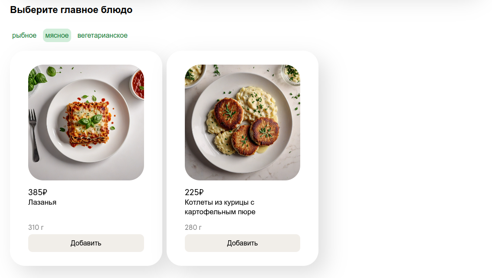
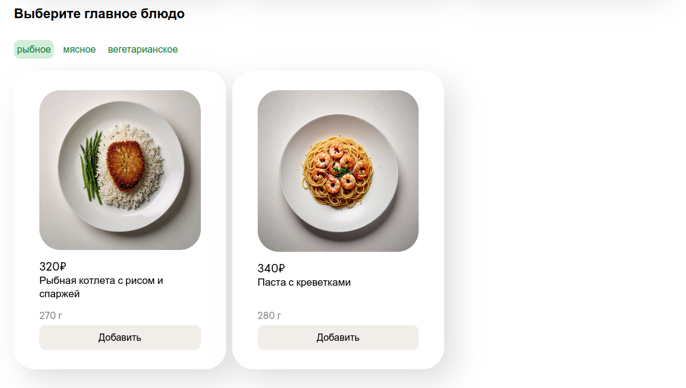

Добавьте новые блюда и категории. Создайте фильтры для каждой категории.
Порядок выполнения
Примерные макеты разделов:
Раздел "Выберите суп"
Раздел "Выберите главное блюдо"
Раздел "Выберите салат или стартер"
Раздел "Выберите напиток"
Раздел "Выберите десерт"
Раздел "Сделать заказ"
Полный макет страницы:
1. Для каждой категории блюд добавьте блок с фильтрами (фильтры - это кнопки).
Фильтры для категорий:
| Категория | Фильтры |
|---|---|
| Суп |
рыбный мясной вегетарианский |
| Главное блюдо |
рыбное мясное вегетарианское |
| Напиток |
холодный горячий |
У каждой кнопки должен быть data-атрибут - data-kind. Значение data-kind - это название фильтра на английском. Например, для рыбных супов data-kind может быть со значением "fish".
2. Для каждого объекта с блюдом добавьте новое свойство kind. Оно будет хранить значение для фильтрации.
Значение kind должно соответствовать значению data-kind одного из фильтров.
Например, если data-kind для вегетарианских супов - "veg", свойство kind супа "Гаспачо" тоже будет "veg".
Пример объекта:

3. Добавьте новые категории блюд на страницу.
Добавьте еще 2 категории блюд:
- Салаты и стартеры
- Десерты
Структура блоков с новыми категориями должна быть такой же как у остальных категорий. Сейчас новые блоки не содержат блюд, вы будете заполнять их в следующем шаге.
В данные категории также необходимо добавить блок с фильтрами. Фильтры:
| Категория | Фильтры |
|---|---|
| Салат или стартер |
рыбный мясной вегетарианский |
| Десерты |
маленькая порция средняя порция большая порция |
4. Добавьте новые блюда.
Теперь необходимо добавить новые блюда во все существующие категории. В каждой категории должно быть по 6 блюд.
Добавьте в массив все недостающие блюда. Не забудьте указать все свойства, включая kind.
В каждой категории блюд должны быть представлены блюда всех возможных типов (kind) для данной категории. Ниже представлена
таблица с указанием количества блюд каждого типа для соответствующих им разделов меню (категорий блюд):
| Категория | Тип | Количество |
|---|---|---|
| Суп | рыбный | 2 |
| мясной | 2 | |
| вегетарианский | 2 | |
| Главное блюдо | рыбное | 2 |
| мясное | 2 | |
| вегетарианское | 2 | |
| Салат или стартер | рыбный | 1 |
| мясной | 1 | |
| вегетарианский | 4 | |
| Напиток | холодный | 3 |
| горячий | 3 | |
| Десерт | маленькая порция | 3 |
| средняя порция | 2 | |
| большая порция | 1 |
То есть, если сейчас в разделе с главными блюдами у вас добавлено 2 рыбных и 1 мясное блюдо, вам нужно добавить
еще 1 мясное и 2 вегетарианских.
Изображения с блюдами можно скачать по ссылке.
5. Реализуйте отображение всех новых блюд на страницу с помощью JavaScript. Проверьте, что скрипт работает для всех категорий.
6. Создайте скрипт, с помощью которого можно фильтровать отображаемые в каждой категории блюда.
- При клике на кнопку с фильтром, в блоке отображаются только блюда с соответствующим значением kind.
Например, пользователь выбрал фильтр "мясное" в категории с главными блюдами. Вот как должен выглядеть блок с категорией:  - Если затем пользователь выбрал другой фильтр, блюда должны измениться. Например, поменяем фильтр на "рыбное": 
- При клике на кнопку, ей добавляется класс "active" и меняется стиль ее отображения.
- Если кликнуть по выбранному фильтру повторно, класс "active" удаляется, а в блоке снова отображаются все блюда.
- Если ни один из фильтров не был выбран, в блоке отображаются все блюда.
Функции из предыдущей лабораторной должны работать корректно, в том числе после фильтрации блюд. То есть, например, если после фильтрации было скрыто выбранное ранее блюдо, оно не должно исчезнуть из формы заказа (выбор не должен сброситься).
Видео
На видео продемонстрировано, как должна работать фильтрация и функции из предыдущей работы:
Защита
Чтобы сдать лабораторную, необходимо выполнить все требования.